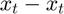
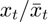
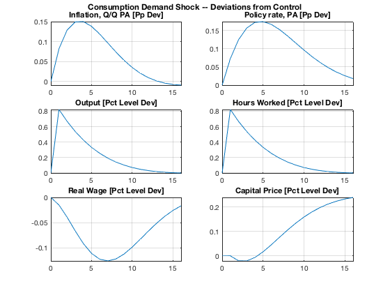
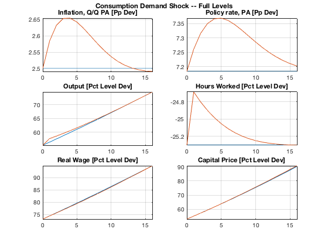

Simulate Simple Shock Responses
Simulate a simple shock both as deviations from control and in full levels, and report the simulation results.
Contents
Clear Workspace
Clear workspace, close all graphics figures, clear command window, and check the IRIS version.
clear close all clc irisrequired 20180131
Load Solved Model Object
Load the solved model object built in read_model. Run read_model at least once before running this m-file.
load mat/read_model.mat m;
Define Dates
Define the start and end dates as plain numbered periods here.
startDate = 1; endDate = 40;
Alternatively, use the IRIS functions yy( ), hh( ), qq( ), or mm( ) to create and use proper dates (with yearly, half-yearly, quarterly, or monthly frequency, respectively). For instance,
startdate = qq(2010,1); enddate = startdate + 39;
Simulate Consumption Demand Shock
Simulate the shock as deviations from control (e.g. from the steady state or balanced-growth path). To this end, set the option Deviation=true. Both the input and output database are then interpreted as deviations from control:
- the deviations for linearised variables are defined as : hence, 0 means the variable is on its steady state.
- the deviations for log-linearised variables are defined as : hence, 1 means the variable is on its steady state, or 1.05 means it is 5 % above it.
The function zerodb( ) finds the maximum lag in the model, and creates the input database accordingly so that it includes all necessary initial conditions.
d = zerodb(m, startDate:endDate); d.Ey(startDate) = log(1.01); s = simulate(m, d, 1:40, 'Deviation=', true, 'AppendPresample=', true); display(s);
s =
struct with fields:
Short: [44x1 Series]
Infl: [44x1 Series]
Growth: [44x1 Series]
Wage: [44x1 Series]
Y: [44x1 Series]
N: [44x1 Series]
W: [44x1 Series]
Q: [44x1 Series]
H: [44x1 Series]
A: [44x1 Series]
dA: [44x1 Series]
P: [44x1 Series]
R: [44x1 Series]
Pk: [44x1 Series]
Rk: [44x1 Series]
Lambda: [44x1 Series]
dP: [44x1 Series]
d4P: [44x1 Series]
dW: [44x1 Series]
RMC: [44x1 Series]
ttrend: [44x1 Series]
Mp: [40x1 Series]
Mw: [40x1 Series]
Ey: [40x1 Series]
Ep: [40x1 Series]
Ea: [40x1 Series]
Er: [40x1 Series]
Ew: [40x1 Series]
alpha: 1.0074
beta: 0.9962
gamma: 0.6000
delta: 0.0300
k: 10
pi: 1.0062
eta: 6
psi: 0.2500
chi: 0.8500
xiw: 60
xip: 300
rhoa: 0.9000
rhor: 0.8500
kappap: 3.5000
kappan: 0
Short_: 0
Infl_: 0
Growth_: 0
Wage_: 0
std_Mp: 0
std_Mw: 0
std_Ey: 0.0100
std_Ep: 0.0100
std_Ea: 1.0000e-03
std_Er: 0.0100
std_Ew: 0.0100
Report Simulation Results
Use the dbplot( ) function to create a quick report of simulation results. Note how we use the Transform= option to plot percent deviations of individual variables.
plotRng = startDate-1 : startDate+15;
plotList = { ...
' "Inflation, Q/Q PA [Pp Dev]" dP^4 ', ...
' "Policy rate, PA [Pp Dev]" R^4 ', ...
' "Output [Pct Level Dev]" Y ', ...
' "Hours Worked [Pct Level Dev]" N ', ...
' "Real Wage [Pct Level Dev]" W/P ', ...
' "Capital Price [Pct Level Dev]" Pk', ...
};
dbplot(s, plotRng, plotList, ...
'Tight=', true, 'Transform=', @(x) 100*(x-1));
grfun.ftitle('Consumption Demand Shock -- Deviations from Control');
 Simulate Shock in Full Levels
Instead of deviations from control, simulate now the same shocks in full levels. To that end, create an input dabase with the steady state (balanced-growth path) using sstatedb( ), and keep the option Deviation=false (default). When reporting the results, plot both the simulated shock against the steady-state (balanced-growth path) database: The & operator combines two databases so that every time series has two columns.
d = sstatedb(m, startDate:endDate); d.Ey(startDate) = log(1.01); s = simulate(m, d, 1:40, 'AppendPresample=', true); dbplot(d & s,plotRng,plotList, ... 'Tight=', true, 'Transform=', @(x) 100*(x-1)); grfun.ftitle('Consumption Demand Shock -- Full Levels');
Show Variables and Objects Created in This File
whos
Name Size Bytes Class Attributes ans 1x1 120 cell d 1x1 26120 struct endDate 1x1 8 double m 1x1 90932 model plotList 1x6 1066 cell plotRng 1x17 136 double s 1x1 25224 struct startDate 1x1 8 double